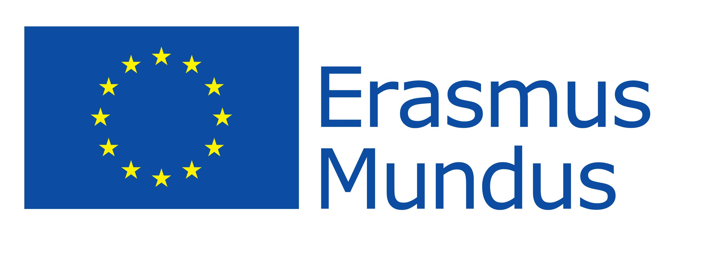

Brief Biosketch
Lu Jiang is a staff research scientist and manager at Google (a brief bio). Lu is also an adjunct faculty member at Carnegie Mellon University, School of Computer Science, Language Technologies Institute where he supervises graduate student's research and teaches lectures.His work has been nominated for the best paper at the top conferences in natural language processing (ACL) and computer vision (CVPR), among other awards at ACM ICMR, IEEE SLT, and NIST TRECVID. His research has been integral in the development of multiple Google products such as YouTube, Cloud, Cloud AutoML, Ads, Waymo, and Translate, impacting the daily lives of billions of users worldwide.
He has worked with several renowned researchers in the field of computer vision and natural language processing. From 2017-2018, he was the founding member and first research scientist hire by Dr. Jia Li and Dr. Fei-Fei Li at Google Cloud AI. He then went on to work at Google Research, where he worked with Dr. Weilong Yang (2019-2020), Dr. Ce Liu (2020-2021), Madison Le (2021-2022), and Dr. Irfan Essa (2023). Dr. Tat-Seng Chua and Dr. Louis-Philippe Morency are his thesis advisors during his PhD at Carnegie Mellon University, which he received in 2017 under the guidance of DDr. Alexander Hauptmann and Dr. Teruko Mitamura. Throughout his internships at Yahoo, Google, and Microsoft Research, he was mentored by several researchers including Dr. Liangliang Cao, Dr. Yannis Kalantidis and Sachin Farfade from Yahoo Research, Dr. Paul Natsev and Dr. Balakrishnan Varadarajan from Google Research, Dr. Qiang Wang and Dr. Dongmei Zhang from Microsoft Research. Prior to this, he worked as a research assistant at Xi'an Jiaotong University under the supervision of Dr. Jun Liu.
Honors and Awards
- Best paper finalist at CVPR, 2022
- AI 2000 Most Influential Scholar, 2021-2023
- Best paper nomination at ACL, 2019
- Yahoo! Fellowship, 2016
- Best Poster at IEEE Spoken Language Technology, 2014
- Best Paper nomination at ICMR 2014, 2015
- Best performer on IARPA Aladdin Video at NIST TRECVID 2013, 2014
Selected Professional Activities
Program Chair:
- Program Co-chairs of CVPR AI for Content Creation Workshop (AI4CC) (2020-2023)
Area Chair:
- Area Chair of CVPR (2023, 2024), ICML (2024), ICCV (2023), NeurIPS (2023), WACV (2023, 2024)
- Area Chair of ACM Multimedia (2019-2023), SPC of AAAI (2022-2024)
Misc.
- AI panelist for America's Seed Fund (NSF SBIR)
- Google Faculty Award Committee
Acknowledgment
 |
 |
||
| Google Research | Yahoo! Research | Microsoft Research | IBM |
| |
|||
|  |  |
 |
|
| Erasmus Mundus | IARPA | Samsung Research | Fuji Xerox |